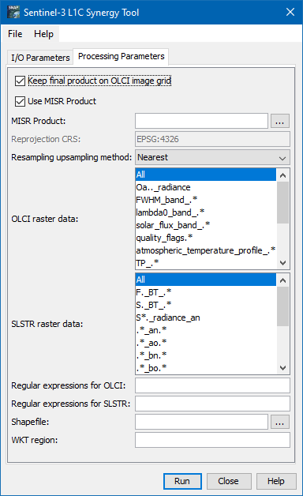

| Sentinel-3 L1C SYN Tool |
|
The current Sentinel 3 ground segment includes a synergy branch where Level 1b data from two instruments onboard Sentinel 3, namely OLCI and SLSTR, are commonly processed to a Level 2 product, containing aerosol and surface reflectance data.
User demand showed that there is an additional need to obtain a product where the two Level 1b data streams (TOA radiances or reflectances) are merged and collocated, and which allows them an individual Level 2 processing. This product shall be called Level 1C SYN.
|

> gpt L1CSYN -h
Usage:
gpt L1CSYN [options]
Source Options:
-SolciProduct=<file> OLCI source product
This is a mandatory source.
-SslstrProduct=<file> SLSTR source product
This is a mandatory source.
Parameter Options:
-PallowedTimeDiff=<long> Allowed time difference between SLSTR and OLCI products
Default value is '10'.
Parameter unit is 'h'.
Graph XML Format:
<graph id="someGraphId">
<version>1.0</version>
<node id="someNodeId">
<operator>L1CSYN</operator>
<sources>
<olciProduct>${olciProduct}</olciProduct>
<slstrProduct>${slstrProduct}</slstrProduct>
</sources>
<parameters>
<allowedTimeDiff>long</allowedTimeDiff>
</parameters>
</node>
</graph>
A complete command line call (on windows) might look like the following:
> gpt L1CSYN -PallowedTimeDiff=2 -t "c:\output\S3_L1C_SYN.nc" -SolciProduct="c:\input\S3A_OL_1_EFR____20170313T110342_20170313T110642_20170314T162839_0179_015_208_2520_LN1_O_NT_002.SEN3"
-SslstrProduct="S3A_SL_1_RBT____20170313T110343_20170313T110643_20170314T172757_0179_015_208_2520_LN2_O_NT_002.SEN3"